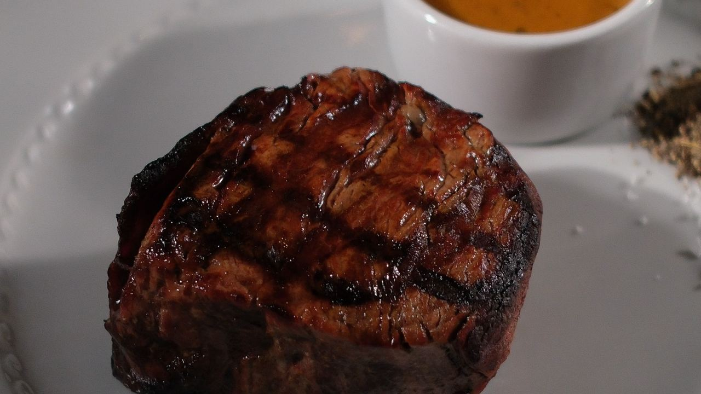
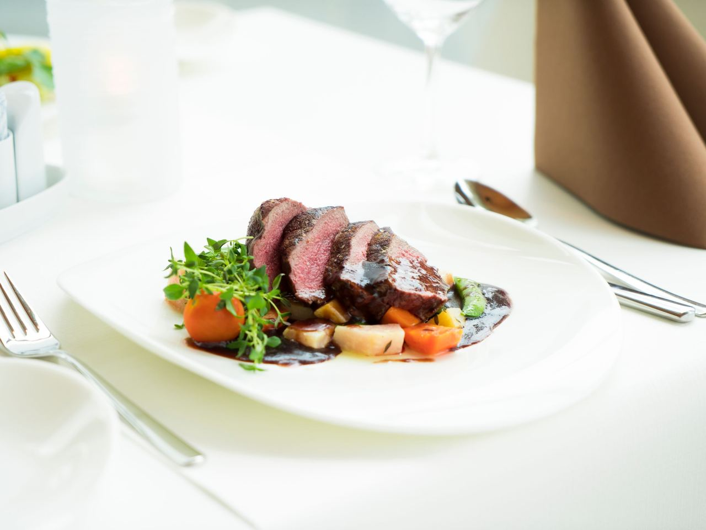
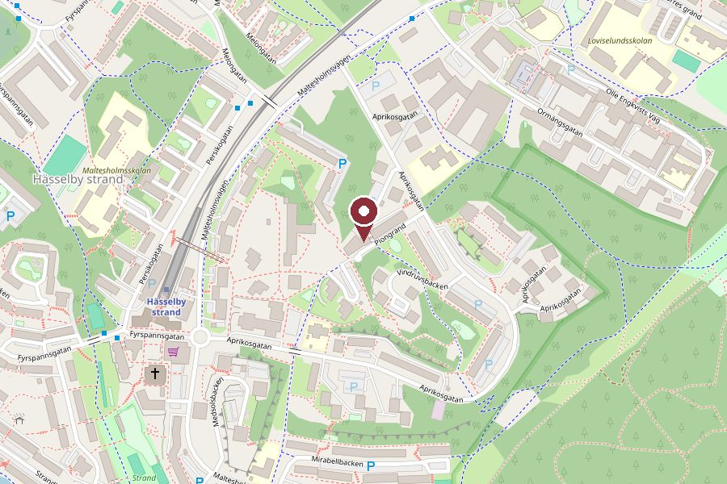

Kvarterskrog · Hässelby strand
Kvarterskrogen med hjärta
Entrecôte, klassisk husmanskost och ett glas gott vin – på Piongränd 8.
Ring & boka bord★★★★★ 4,6 av 5 · 80+ omdömen på Google
En riktig kvarterskrog
Glada Munnen är en mysig krog mitt i Hässelby strand där ägaren själv tar emot. Menyn blandar klassiker som Biff Rydberg med spännande smaker – och portionerna är alltid generösa.

Gästernas favoriter
Från köket
Entrecôte
Med pepparsås – husets klassiker.
Biff Rydberg
Svensk klassiker, vällagad.
Balkan steak sandwich
En favorit bland stamgästerna.
I baren
Vin & drinkar
Ett glas till maten eller i baren.
Ring 08-38 47 01 för dagens meny och bordsbokning.
Öppettider
| Måndag – tisdag | Stängt |
| Onsdag – torsdag | 16:00 – 22:30 |
| Fredag – lördag | 16:00 – 00:00 |
| Söndag | 16:00 – 22:30 |
Piongränd 8, 165 60 Hässelby
Hässelby strand · nära tunnelbanan
08-38 47 01
gladamunnen@gmail.com
